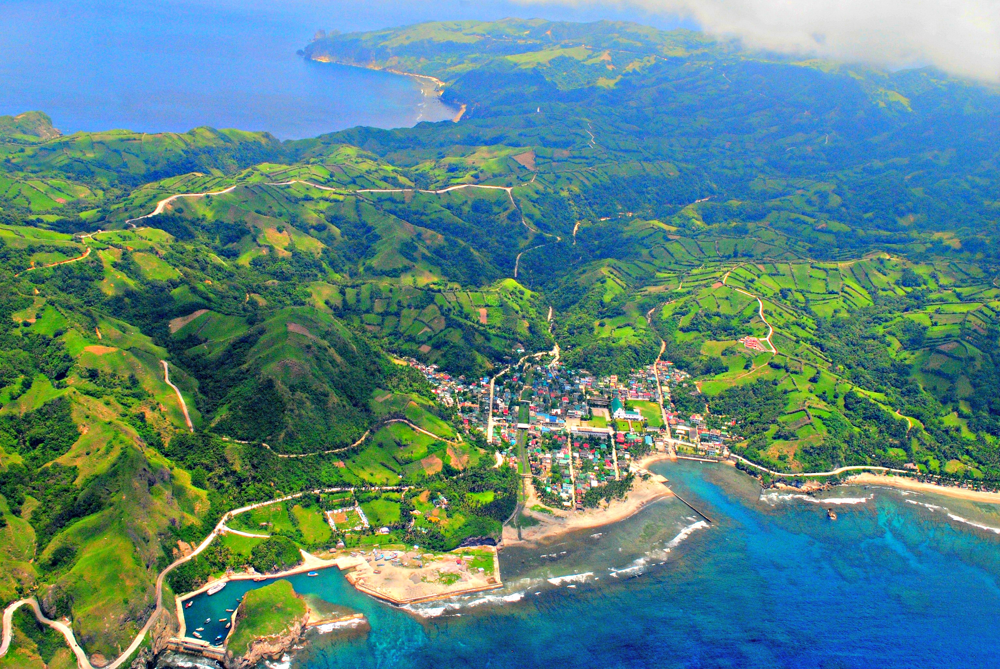
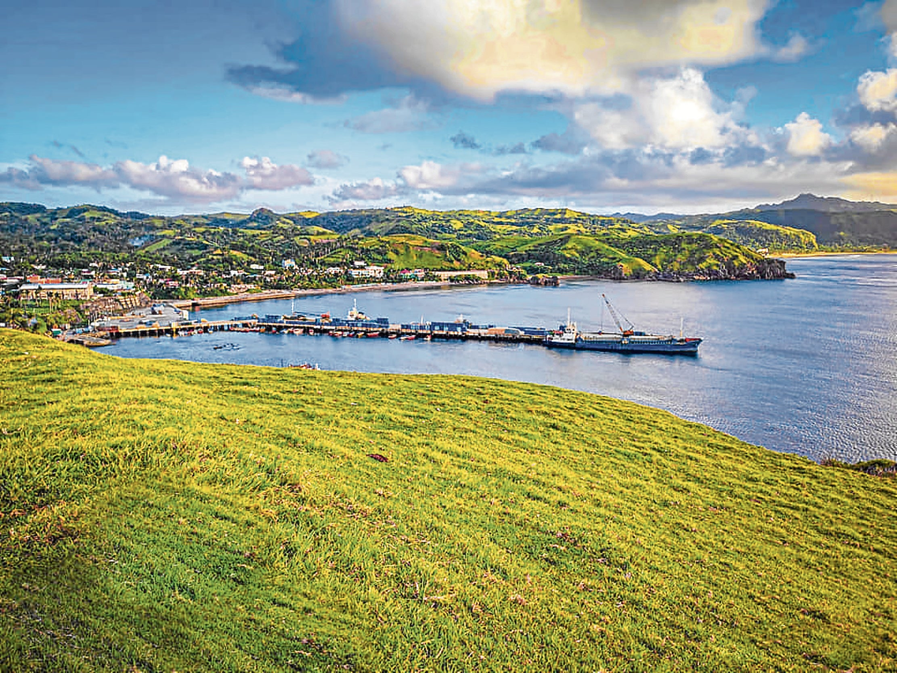

In the 2020 census, it had a population of 9,517 people. Basco is located on Batan
Island, the second largest among the Batanes Islands, the northernmost islands of the Philippines. As a
capital town it is the center of governance, religious, education and business activities so people
flock here for many reasons. This town was founded in 1785 (but named Basco in 1783) by the Spanish
missionaries and officials of the Spanish government who started the civilization and Christianization
of Batanes. The history of Basco began with the arrival of sea-rowing Malays in the area. They set up settlements in
the Northern portion of what is known before as Basay Island and now Batan Island. From
1783 to 1897,
Batanes was a sub-province of Cagayan with Basco as the capital town. The town is named after Capitán
General José Basco, who led the pacification and conquest of the islands during his term as Governor-General.
In the 19th Congress of the Philippines, house bills were filed by various representatives which seeks Basco
including other capital towns of provinces with no current component cities, independent component cities or
highly urbanized cities to automatically convert into cities. The municipality has a land area of 49.46
square kilometres (19.10 sq mi) constituting 22.58% of the 219.01-square-kilometre- (84.56 sq mi) total area
of Batanes. Basco is politically subdivided into 6 barangays. Each barangay consists of puroks and some have
sitios. The sitio of Diptan was converted into a barrio, known as San Antonio, in 1955. Also in the same
year, the sitios of Coral, Hago, Tuva, Diojango, Canalaan, Honaan and Dimnalamay were converted into the
barrio of San Joaquin. Basco has a tropical monsoon climate (Köppen climate classification Am). Compared
to cities down south such as Laoag or Manila, it has a slightly cooler temperatures especially during the
winter months due to its northerly location. According to the 2015 Census, the age group with the highest population in Basco is 10 to 14, with
874 individuals. Conversely, the age group with the lowest
population is 75 to 79, with 130 individuals.
Combining age groups together, those aged 14 and below, consisting of the young dependent population
which include infants/babies, children and young adolescents/teenagers, make up an aggregate of 28.08%
(2,409). Those aged 15 up to 64, roughly, the economically active population and actual or potential
members of the work force, constitute a total of 64.65% (5,546). Finally, old dependent population consisting of the senior citizens, those aged 65 and over, total 7.27%
(624) in all. The computed Age Dependency Ratios mean that among the population of Basco, there are 43
youth dependents to every 100 of the working age population; there

are 11 aged/senior citizens to every
100 of the working population; and overall, there are 55 dependents (young and old-age) to every 100 of
the working population. The median age of 27 indicates that half of the entire population of Basco are
aged less than 27 and the other half are over the age of 27. The population of Basco grew from 2,347 in
1903 to 9,517 in 2020, an increase of 7,170 people over the course of 117 years. The latest census figures
in 2020 denote a positive growth rate of 2.21%, or an increase of 938 people, from the previous population
of 8,579 in 2015. The total number of registered voters or electorate in Basco for the year 2019 was 5,535,
broken down into 2,568 males and 2,967 females. The municipal center of Basco is situated at approximately
20° 27' North, 121° 58' East, in the island of Batan. Elevation at these coordinates is estimated at 23.4
meters or 76.8 feet above mean sea level. Based on the great-circle distance (the shortest distance between
two points over the surface of the Earth), the cities closest to Basco are Laoag, Ilocos Norte, Batac,
Ilocos Norte, Tuguegarao, Cagayan, Tabuk, Kalinga, Vigan, Ilocos Sur, and Ilagan, Isabela. The nearest municipalities are Mahatao, Batanes, Ivana, Batanes, Uyugan, Batanes, Sabtang, Batanes,
Itbayat, Batanes, and Calayan, Cagayan. Its distance from the national capital is 657.04 kilometers
(408.27 miles). The following list delineates such distance measurements. Basco is one of the youngest
land formation of the
other side. That is for maximum security. At the top most are piles of rounded andesite stones as weapons for
enemies that dared come near. Below is the next level of their community and near the base are the caillanes or
common people who do the food production. Notice too, how our fields are bounded by hedgerows of trees or reeds.
They serve both as boundaries, protection from the winds and sea-sprays and serve as food and wood sources while
projecting an overall quilt- like pattern beautifying our farms in the process. When the Spaniards came they
gathered us in one place and arranged the streets and houses neatly and in an orderly manner. What you see in
our towns in Batanes was the town planning work of the Spaniards. We were under the Spanish government for 169
years from 1719 to 1888, a rule which was of Christanization and civil governance and education and not of
militarization and oppression.